| HOME | PERSONAL | PROJECTS | LINKS |
data = {Ω, V};
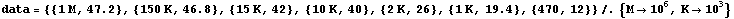
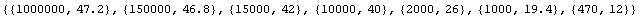
data = {V, A};
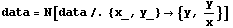
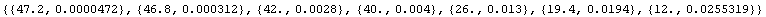
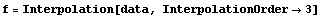
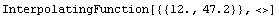
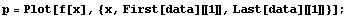
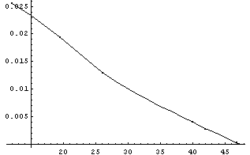
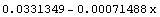
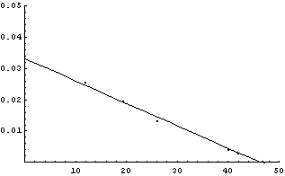
Il modello lineare di Tevenin prevede un generatore di tensione pari a:
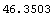
ed una resistenza probabilmente dovuta per lo più alla linea di valore:
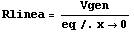
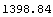
Inoltre si consideri che la centralina commuta da off (cornetta
giù) a on quando la corrente raggiunge crescendo il valore di
10mA.
Il passaggio inverso accade a 25mA.
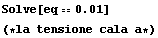
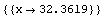
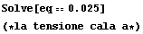
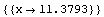
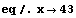
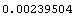
| HOME | PERSONAL | PROJECTS | LINKS |